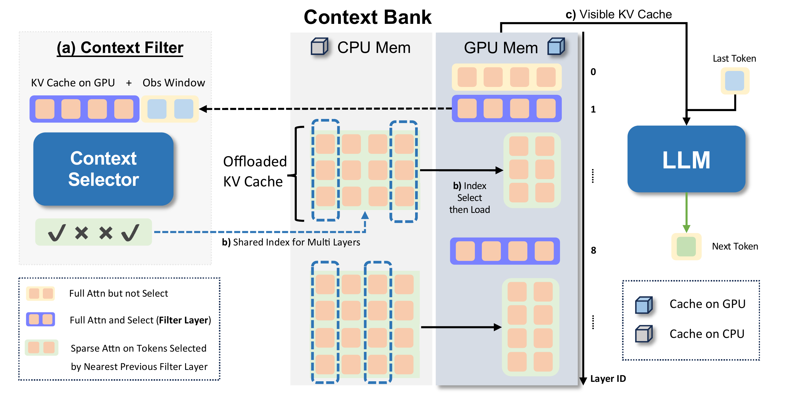

Select Context
选择上下文
Dynamically identifies important context information instead of treating all tokens uniformly.
动态识别关键上下文信息，而不是对所有 token 做均匀处理。
OmniKV studies how long-context LLMs can keep the most useful context while reducing unnecessary computation. The method uses inter-layer attention similarity to dynamically select crucial context information for efficient long-context reasoning.
OmniKV 研究长上下文 LLM 如何保留最有价值的上下文，同时减少不必要的计算。方法利用层间注意力相似性，动态选择关键上下文信息，提升长文本处理效率与性能。
OmniKV is part of the efficient LLM research line. It focuses on a practical long-context question: how can a model avoid spending the same amount of computation on context that is not equally useful?
OmniKV 属于高效大模型研究主线，关注一个实际的长上下文问题：模型如何避免在不等价的信息上投入同样多的计算？
Dynamically identifies important context information instead of treating all tokens uniformly.
动态识别关键上下文信息，而不是对所有 token 做均匀处理。
Uses inter-layer attention similarity as the signal behind context selection.
以层间注意力相似性作为上下文选择的重要依据。
Targets better long-context efficiency while preserving useful information for downstream tasks.
在保留下游任务所需信息的同时，提高长上下文推理效率。
The original framework figure shows OmniKV's decode-stage system: a Context Selector identifies useful tokens in filter layers, while the Context Bank keeps full KV cache offloaded and only moves selected subsets back to GPU for sparse layers.
原始框架图展示了 OmniKV 的 decode 阶段系统：Context Selector 在 filter layers 中识别关键 token，Context Bank 保留完整 KV cache 并把选中的子集加载回 GPU 供稀疏层使用。

During prefill, every layer performs full attention and builds KV cache. OmniKV then stores most non-filter layer cache in the CPU-side Context Bank, while keeping a small set of filter layers available for full attention and token selection.
在 prefill 阶段，所有层先执行完整注意力并生成 KV cache。随后 OmniKV 将多数非 filter layer 的 cache 存入 CPU 侧 Context Bank，同时保留少数 filter layers 做完整注意力和 token 选择。
In decode, selected token indices are refreshed dynamically. The full cache is retained in the Context Bank, so tokens are not permanently discarded; only the visible GPU cache is made sparse for the current step.
在 decode 阶段，token 索引会动态更新。完整 cache 仍保存在 Context Bank 中，因此 token 不会被永久丢弃；只是当前步对 GPU 可见的 KV cache 变稀疏。
Layers between neighboring filter layers share selected indices, allowing packed CPU-to-GPU loading. This reduces both attention sequence length and repeated transfer volume in long-context inference.
相邻 filter layers 之间的层共享选择索引，因此可以批量从 CPU 加载到 GPU，减少长上下文推理中的注意力长度和重复数据传输。
The paper reports best or near-full-attention quality on LongBench and InfiniteBench, up to 75% KV-cache memory reduction with offloading, and 1.7x speedup at 128K context.
论文报告在 LongBench 和 InfiniteBench 上达到最佳或接近 full attention 的效果；结合 offloading 可最多减少 75% KV-cache 显存，并在 128K context 下达到 1.7x 加速。
OmniKV sits at the intersection of long-context inference, sparse attention, and KV-cache systems. It is most relevant to work on training-free inference acceleration, dynamic token selection, and memory-efficient LLM serving.
OmniKV 位于长上下文推理、稀疏注意力与 KV-cache 系统的交叉处，适合与训练无关的推理加速、动态 token 选择和高效 LLM serving 放在一起理解。
Paper, implementation, and Chinese write-up for OmniKV.
OmniKV 的论文、代码与中文解读。